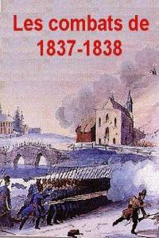

|
(excerpt from the website of the federal National Archives)
Upper Canada, 1837-1838
The rebellion in Upper Canada is often associated with the
name of William Lyon Mackenzie (1795-1861). This
reformer, who was also a newspaper editor and mayor of
Toronto, was a formidable orator who for many
years had waged a war of words against the oligarchy
ruling the province. In 1837, having
seen his political attempts at reform fail,
he rallied radicals and moderates to an ill-conceived plan to
overthrow the government.
 Inspired
by the violent incidents and clashes between
regular British troops and the Patriotes of Lower Canada
near Montréal in November 1837, Mackenzie was convinced
that the time to act had come. Most of his
supporters were concentrated north and west of
Toronto, and he recruited hundreds of malcontents there. Mackenzie
set up his headquarters at Montgomery's Tavern, and
on December 5, 1837, he set out to march on Toronto with
some 800 poorly equipped, untrained rebels. Inspired
by the violent incidents and clashes between
regular British troops and the Patriotes of Lower Canada
near Montréal in November 1837, Mackenzie was convinced
that the time to act had come. Most of his
supporters were concentrated north and west of
Toronto, and he recruited hundreds of malcontents there. Mackenzie
set up his headquarters at Montgomery's Tavern, and
on December 5, 1837, he set out to march on Toronto with
some 800 poorly equipped, untrained rebels.
Since the regular British troops were busy
in Lower Canada, a small group of local militiamen
was quickly raised to face the rebel
forces. Though outnumbered, they managed to
block the advance of Mackenzie and his men on Toronto.
Two days later, about 1,000 loyal militiamen and volunteers
counter-attacked what was left of Mackenzie's rebel forces
near Montgomery's Tavern and routed them
after a brief but violent engagement.
A second rebel force had been raised in the
Brantford area by Dr. Charles Duncombe (1767-1862)
and Eliakim Malcolm (1801-1874). On December 14, 1837, near the
village of Scotland, they faced a strong force of
militiamen led by Colonel Allan MacNab (1798-1862) and
were easily defeated. Duncombe and Malcolm had to flee
to the United States.
The dispersal of Duncombe's troops marked the end of the rebellion
in Upper Canada. Two weeks later, Mackenzie (who had
also fled to the United States) and a small band of exiles and
American sympathizers occupied Navy Island, in the
Niagara River. An American supply ship, the Caroline,
was captured and set on fire, but the poorly equipped and
badly organized rebels were finally driven off the island.
Most of the rebel leaders fled the province. Several,
like Mackenzie and Duncombe, took refuge in the United States,
but more than 800 of their followers were arrested.
Although most were later released or
pardoned, two of Mackenzie's chief lieutenants were
hanged for treason, while more than twenty others
were transported to a penal colony in
Australia.
A few exiles and American sympathizers (known as the Patriot
Hunters) went on threatening the
border for some months; they launched a series of raids in 1838. The main
incidents took place at Short Hills, in the Niagara Peninsula, in
June 1838, at the Windmill in November, and on the border between Detroit and
Windsor in December. These engagements were much more violent
than the acts of rebellion that had inspired them. The military
response was swift and decisive. These border raids
were serious, even if poorly organized, and regular British
troops and Upper Canada militia opposed them
in large numbers. The invaders were driven back, and
justice took its course: fifteen rebels were hanged and
dozens of others transported to the penal colonies of
Tasmania.
Lower Canada, 1837-1838
 The
rebellion of 1837-1838 in Lower Canada was much more
violent than the one in Upper Canada. During the spring and
summer of 1837, the province's reform leaders, chief among them
Louis-Joseph Papineau (1786-1871),
exploited long-standing political tensions to build
a large rebel force. The situation
was so tense that in October 1837 all the regular British
troops were withdrawn from Upper Canada and
moved to Lower Canada. The
rebellion of 1837-1838 in Lower Canada was much more
violent than the one in Upper Canada. During the spring and
summer of 1837, the province's reform leaders, chief among them
Louis-Joseph Papineau (1786-1871),
exploited long-standing political tensions to build
a large rebel force. The situation
was so tense that in October 1837 all the regular British
troops were withdrawn from Upper Canada and
moved to Lower Canada.
It was a battle lost before it began. The rebel troops
were no match for the large government military
force under General Sir John
Colborne (1778-1863), backed by a great many
loyal militiamen. The Patriote rebels faced the British troops
and militia on three occasions: at
Saint-Denis, Saint-Charles and Saint-Eustache. The rebels
were victorious at Saint-Denis on November 23, 1837, when
they were led by Dr. Wolfred Nelson (1791-1863). On November 25, Lieutenant-Colonel George
Wetherall (1778-1868) led the government troops that
defeated the rebels at Saint-Charles. The
Battle of Saint-Eustache, on December 14, was also
won by the 1,500 regular and militia soldiers
led by General Colborne, against far fewer
rebels under the command of Amury
Girod (1800-1837). According to historian Elinor Kyte Senior, the
losses were very unequal : more than 300 killed in
combat or dead of their wounds on the insurgents' side,
and fewer than 30 on the government side.
 Martial
law was declared, and many rebels, including
Louis-Joseph Papineau, had to flee to the United States. Hundreds
were arrested, and seven, including Dr. Wolfred Nelson, were
sent into exile in Bermuda. As in
Upper Canada, exiled Patriotes and American
sympathizers joined forces. Early in November 1838, under the
command of Robert Nelson (1794-1873), Dr. Cyrille Côté
(1809-1850) and a few others, they attacked Napierville,
several other villages and the Beauharnois manor. They
had no chance against the well-trained, heavily armed
government troops, and these skirmishes were
quickly put down. Following the trials of the autumn of 1839,
twelve Lower Canada rebels were hanged for their part in
this rebellion and about 130 others were transported to the
penal colonies of Tasmania. Some of the insurgents
stayed in the United States, such as Dr. Edmund B. O'Callaghan (1797-1880), while others, including Louis-Joseph Papineau, returned to Canada after the
proclamation of an amnesty. .
What had begun as a
political problem was finally settled by politics.
In May 1838, Lord Durham began his
inquiry in Québec into the situation in the two
Canadas. Less than six months later he was recalled to
Great Britain over a dispute with the British
government. Even so, he submitted a report in February
1839 recommending sweeping reforms in the
colonies.
This report, controversial for its
anti-French positions, nevertheless led to the union
of the two Canadas in 1840 and the coming of responsible
government in 1848.

|